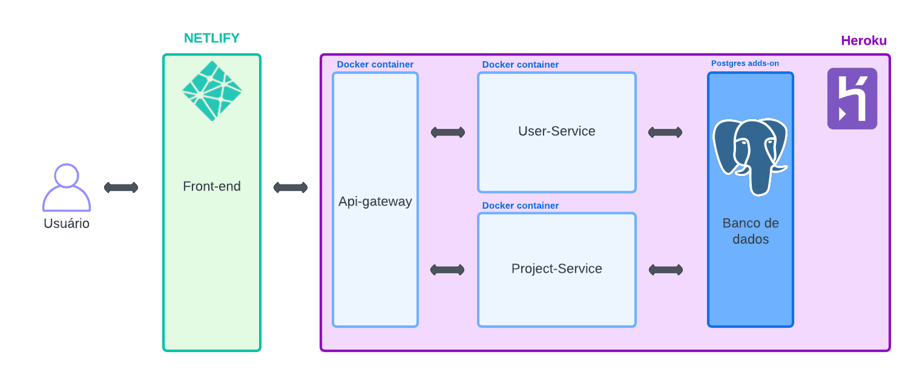
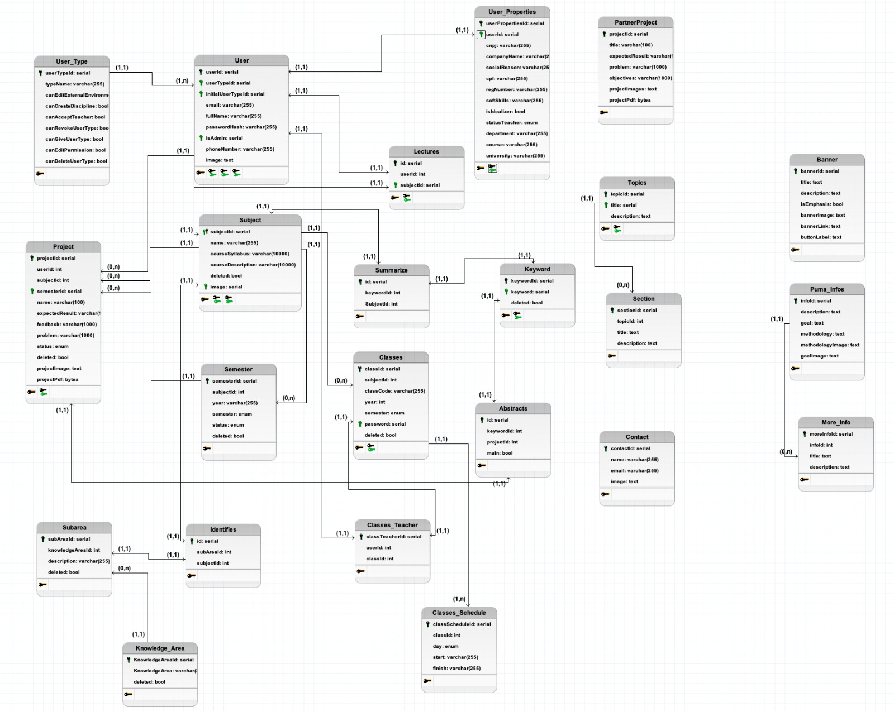

Documento de Arquitetura
1. Introdução
Este Documento de Arquitetura de Software tem como objetivo fornecer uma descrição detalhada dos principais aspectos arquiteturais da solução de software do projeto PUMA. Ele documenta informações e decisões relevantes relacionadas à arquitetura do projeto ao longo de seu desenvolvimento.
O PUMA é um sistema desenvolvido para dar suporte ao curso de Engenharia de Produção da Universidade de Brasília. Seu objetivo é permitir a seleção de grupos, o cadastro de propostas de projetos, o monitoramento de disciplinas e a obtenção de feedback dos stakeholders envolvidos no processo.
2. Visão Geral
- Introdução;
- Visão Geral;
- Definições, Acrônimos e Abreviações;
- Relações;
- 4.1. Arquitetura
- Serviços;
- 5.1. Frontend
- 5.2. Api Gateway
- 5.3. Project Service
- 5.4. User Service
- Tecnologias;
- 6.1 Vue.js
- 6.2 Node.js
- 6.3 PostgreSQL
- 6.4 Docker
- Visão de Dados;
3. Definições, Acrônimos e Abreviações
| Sigla | Significado |
|---|---|
| PUMA | Plataforma Unificada de Metodologias Ativas |
| HTML | Hypertext Markup Language (Linguagem de Marcação de Hipertexto) |
| HTTP | Hypertext Transfer Protocol (Protocolo de Transferência de Hipertexto) |
| SQL | Structured Query Language (Linguagem de Consulta Estruturada) |
| API | Application Programming Interface (Interface de Programação de Aplicações) |
4. Relações
4.1. Visão Geral da Arquitetura
Utilizando como base a arquietura do semestre passado, optamos por manter a mesma estrutura, porém realizando a deleção dos serviços que não continham nenhum código, resultando na deleção do Alocate-Service e do Notify-Service.
Além disso, durante o semestre, tinhamos implementado mais um serviço, o External-Service que seria responsável pelo gerenciamento do ambiente externo, porém ao percerbemos que as informações exibidas no ambiente externo possuía uma forte dependência com todas as models do Project-service, então optamos por manter a arquitetura da seguinte forma:

5. Serviços
5.1. Frontend
O Front End é a Interface de comunicação entre o Usuário e o Sistema.
5.2. Api Gateway
O Api Gateway é utilizado como um mutex para a comunicação entre a interface de usuário e os outros micro-serviços. Dessa forma, ao receber uma requisição o gateway atua como uma ponte entre o front end e o serviço desejado. Atualmente, esse serviço é responsável por fazer o tratamento das requisições entre os microsserviços Project Service e User Service.
5.3. Project Service
O serviço Project Service foi planejado para lidar com todas as tarefas envolvendo projetos do sistema. Assim, o envio de propostas, o encaminhamento para o professor/disciplina adequada e as possíveis alterações nos projetos seriam todas tarefas para o Project Service resolver.
5.4. User Service
O User Service é responsável por manter o controle de usuários, desde sua criação até o controle das rotas de acesso permitidas, criação de times dentre outros. Esse serviço é responsável por lidar com todas as operações que envolvem usuários no projeto Puma.
6. Tecnologias
6.1. Vue.js
O Vue.js é um framework JavaScript para construção de interfaces de usuário interativas. Ele permite criar componentes reutilizáveis e oferece uma sintaxe declarativa e reativa para atualizar automaticamente a interface com base nos dados. É conhecido por ser fácil de aprender e integrar em projetos existentes, tornando o desenvolvimento modular e escalável.
6.2. Node.js
O Node.js é um ambiente de tempo de execução de JavaScript baseado no mecanismo V8 do Google Chrome. Ele permite executar código JavaScript no servidor, em vez de apenas no navegador. O Node.js é conhecido por sua natureza assíncrona e não bloqueante, o que o torna eficiente para lidar com muitas conexões simultâneas. Ele é amplamente utilizado para desenvolvimento de servidores web, aplicativos em tempo real e automação de tarefas do lado do servidor.
6.3. PostgreSQL
O PostgreSQL é um sistema de gerenciamento de banco de dados relacional de código aberto. Ele oferece recursos avançados de armazenamento e recuperação de dados, garantindo integridade, segurança e escalabilidade. O PostgreSQL suporta a linguagem SQL padrão, além de fornecer extensões para funcionalidades adicionais, como tipos de dados personalizados e consultas complexas.
6.4. Docker e Docker Compose
O Docker é uma plataforma de virtualização de contêiner que permite empacotar e distribuir aplicativos com suas dependências em um ambiente isolado. Ele utiliza contêineres leves e independentes para encapsular aplicativos e seus componentes, facilitando a implantação consistente e reproduzível em diferentes ambientes.
O Docker Compose é uma ferramenta para definir e executar aplicativos Docker de vários contêineres. Com o Compose, é possível utilizar um arquivo YAML para a configuração dos serviços.
7. Visão de dados
Devido a implementação de novas funcionalidades e principalmente após a implementação de perfis de usuário, tivemos refatorações nas tabelas do banco de dados, resultando na seguinte modelagem:

8. Referências
[1] Introduction. Vue.js Guide. Disponível em: https://vuejs.org/guide/introduction.html.
[2] About Node.js. Node JS. Disponível em: https://nodejs.org/en/about/.
[3] About PostgreSQL. PostgreSQL. Disponível em: https://www.postgresql.org/about/.
[4] GUEDES, Marylene. O que é o Docker e como ele funciona? TreinaWeb. Disponível em: https://www.treinaweb.com.br/blog/no-final-das-contas-o-que-e-o-docker-e-como-ele-funciona.
9. Histórico de Revisão
| Data | Versão | Modificação | Autor |
|---|---|---|---|
| 27/05/2023 | 0.1 | Abertura do documento. | Juliana Valle |
| 10/06/2023 | 0.2 | Adição do diagrama de arquitetura e de dados | Abner Filipe e Rafael Leão |